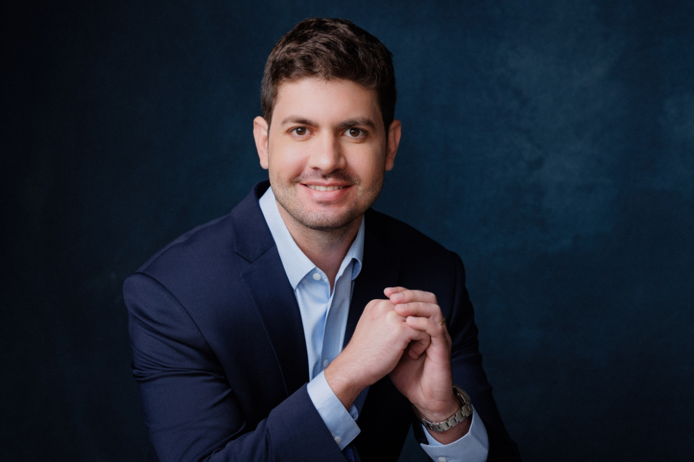
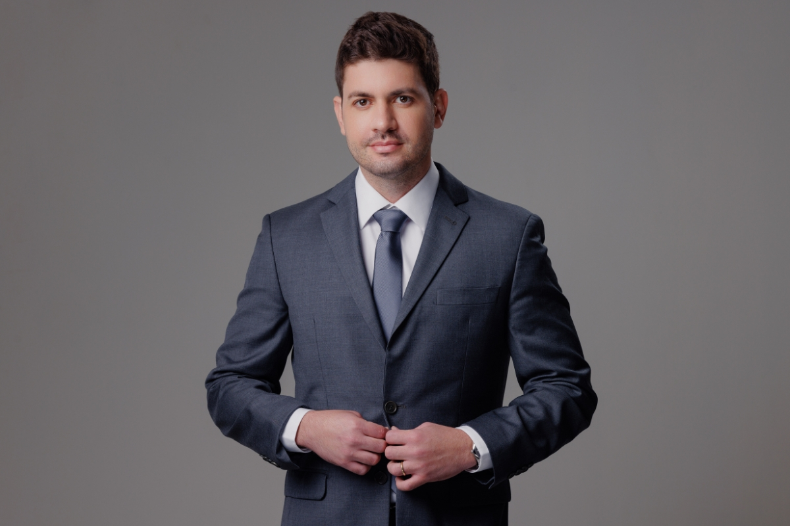
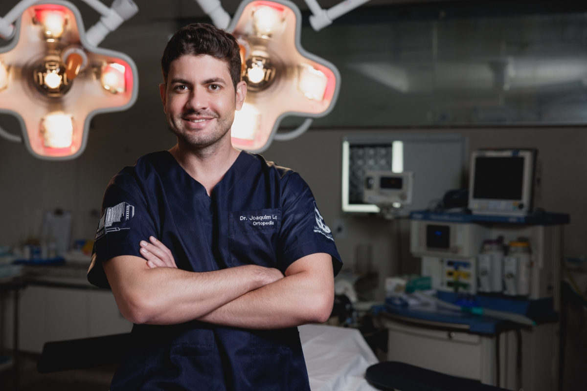

Atendimento completo com foco em Cirurgia do Joelho, incluindo exames, procedimentos e cirurgias de alta complexidade.

O diagnóstico correto é o ponto de partida de qualquer tratamento bem-sucedido. O Dr. Joaquim realiza uma avaliação clínica completa, aliada a exames de imagem e funcionais, para identificar com precisão a origem do problema e traçar o melhor caminho terapêutico.

Nem toda condição ortopédica exige cirurgia. O Dr. Joaquim oferece uma ampla gama de procedimentos minimamente invasivos e tratamentos conservadores, com o objetivo de proporcionar alívio da dor e recuperação funcional com máxima segurança.

Com residência específica em Cirurgia do Joelho pela Santa Casa de São Paulo e título de especialista pela SBCJ, o Dr. Joaquim realiza as principais intervenções cirúrgicas do joelho, incluindo técnicas artroscópicas e procedimentos de alta complexidade.
Agende uma consulta e receba uma avaliação personalizada.
Agendar agora